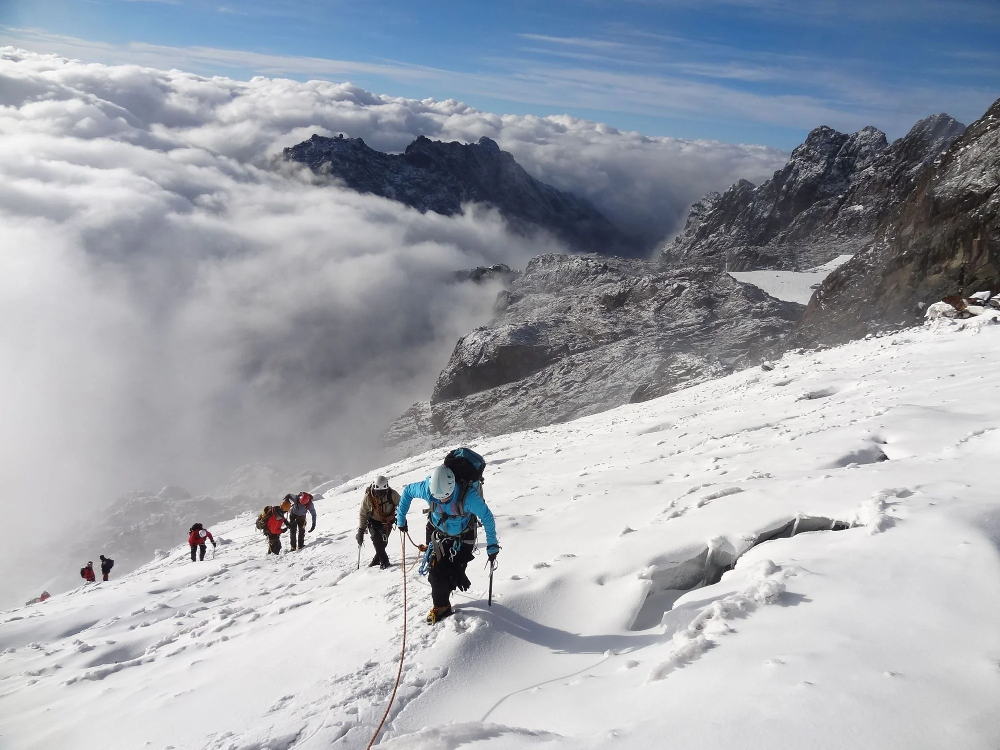
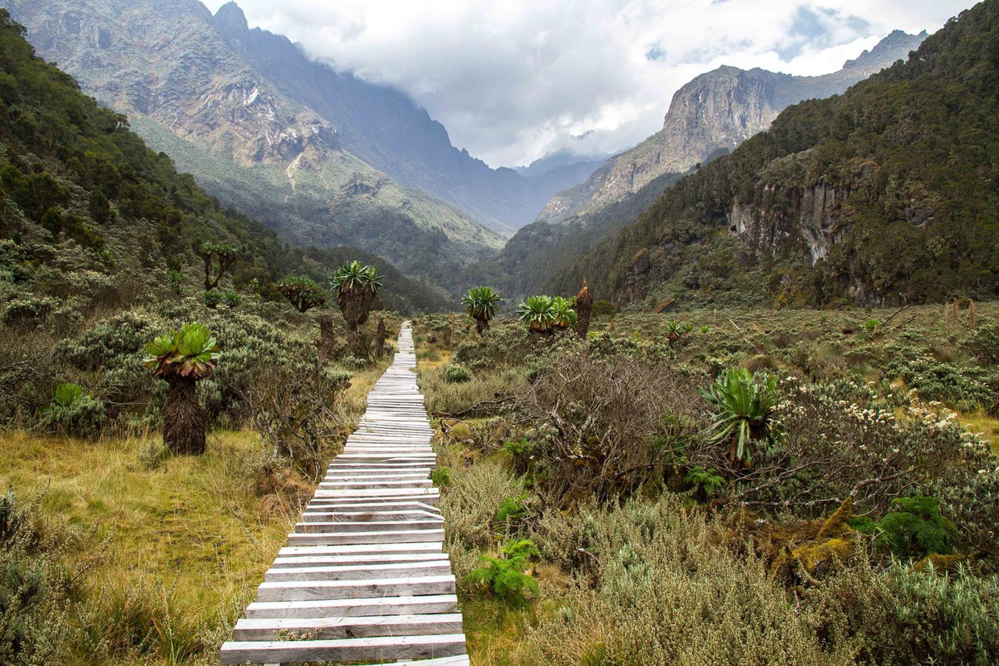
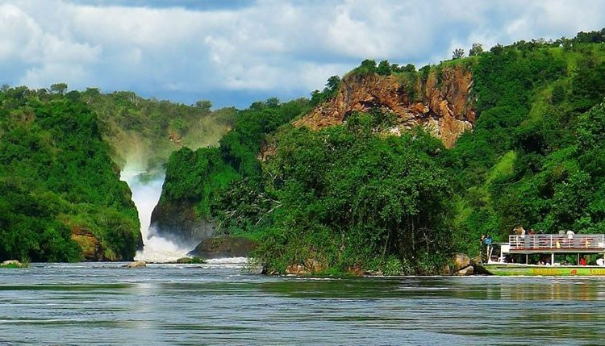
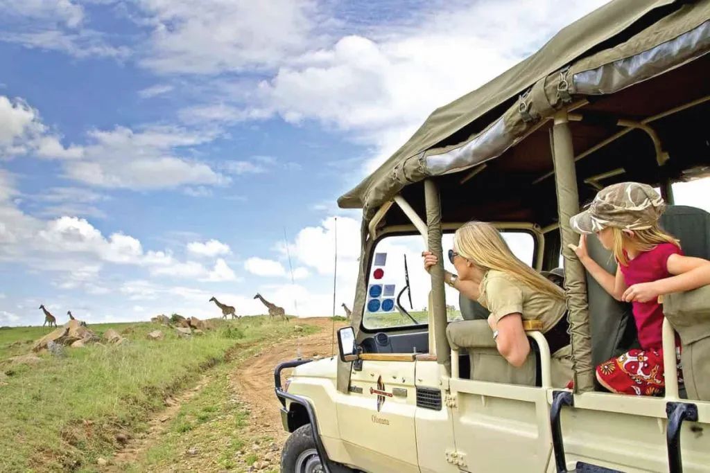

Baganda
Explore Buganda heritage through music, craft, food, and historic sites around Kampala with a knowledgeable local guide.
Central Uganda · Kampala and Buganda
Locally guided journeys in Uganda
Meet mountain gorillas, follow the Nile, and find your own rhythm in the Pearl of Africa.
A different kind of travel
We’re a locally rooted team creating thoughtful adventures across Uganda and East Africa. We take care of the details, so you can be present for the moments that matter.
Find your kind of adventure
Many communities, one Uganda
Explore Buganda heritage through music, craft, food, and historic sites around Kampala with a knowledgeable local guide.
Central Uganda · Kampala and Buganda
Learn about Imbalu and community traditions around Mount Elgon. Ceremonies follow local schedules and are not held every year.
Eastern Uganda · Bugisu and Mount Elgon
Discover northern Uganda's distinctive music, dance, storytelling, and crafts through locally hosted experiences.
Northern Uganda · Acholi sub-region
Take part in community-led cultural experiences that share Batwa heritage and forest knowledge on the community's terms.
Southwestern Uganda · Bwindi region
Connect with Busoga heritage, local stories, and riverside life around Jinja and the Victoria Nile.
Eastern Uganda · Busoga and Jinja
Uganda is home to many more communities and traditions. Visits should be arranged respectfully with local hosts; customs and experiences vary between communities.
A taste of place
Ask your guide where to try these much-loved dishes, and let them know about dietary needs before you travel.
Steamed green bananas, often served with groundnut sauce, beans, or a richly seasoned stew.
A celebratory Buganda-style dish of meat, fish, or groundnuts slow-cooked in a banana leaf.
A popular street-food roll: eggs and vegetables cooked into a chapati and wrapped to go.
A traditional Bagisu dish made with smoked bamboo shoots, often prepared with groundnuts.
Plan around local life
Some dates are fixed; festivals and community ceremonies can change each year. Confirm the current schedule before booking travel.
03 JUNE
A major pilgrimage and day of remembrance at Namugongo, near Kampala.
09 OCTOBER
National celebrations and community events mark Uganda's independence.
DATES VARY
Music and arts festival associated with the Jinja region. Check the organizers' announcement for this year's dates and venue.
COMMUNITY SET
Bagisu initiation ceremonies take place in scheduled cycles. Ask local hosts about community dates and respectful ways to attend.
From high peaks to powerful waters

Rwenzori Mountains

Rwenzori range

Murchison Falls

Made with local knowledge, and a little bit of wonder.Travel with Aventura
Small details make a big difference. Our team brings local insight, honest advice, and a personal touch to every trip, from your first question to the journey home.
Your Uganda story starts here
Tell us what you’re dreaming of. We’ll help you turn it into a journey worth remembering.
Start planning